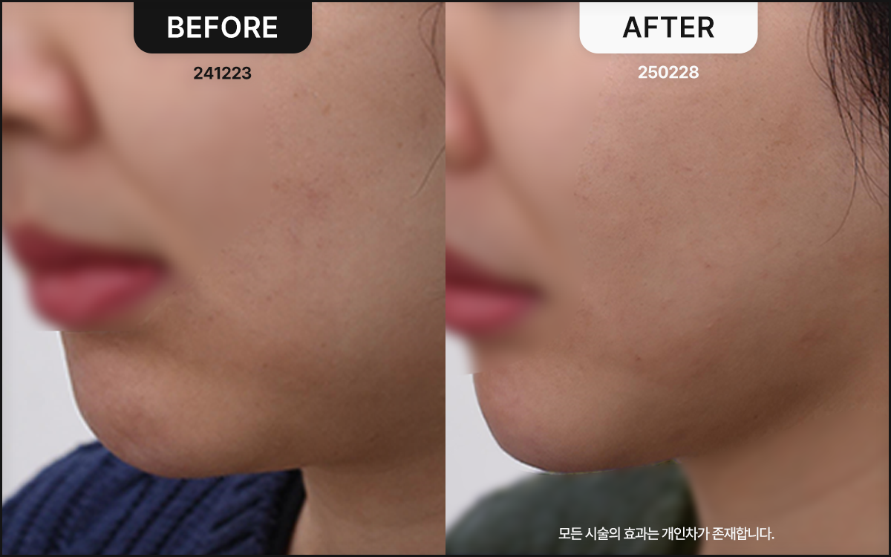
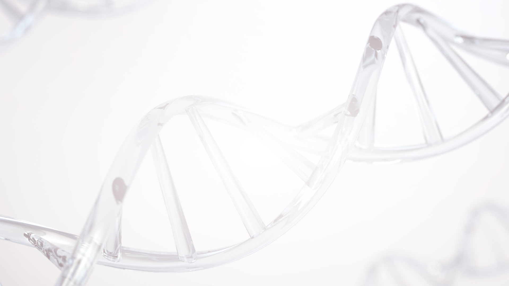
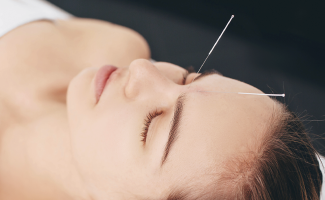
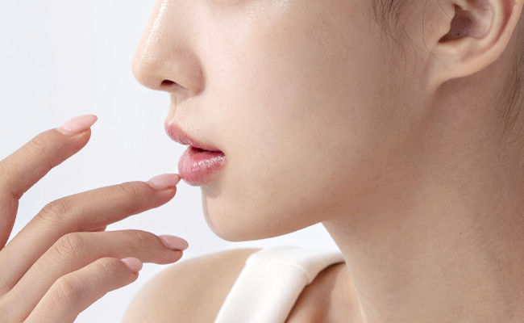

Collagen Thread-Embedding Lifting
Collagen synthesis and improved skin elasticity at once
Collagen Booster Thread Lifting Thread embedding is a procedure in which special, slowly dissolving threads are inserted into the skin to actively stimulate collagen production; unlike ordinary injections, it maintains a natural look and long-lasting results.

What is Collagen Booster Thread Lifting?
The Collagen Booster Thread embedding technique
is a procedure that inserts slowly dissolving threads into the skin to stimulate collagen production.
Once inserted, the threads deeply stimulate the dermis, subcutaneous fat, and muscle layers, improving skin density and elasticity at the same time.
Unlike injections, it delivers natural, long-lasting results and improves the skin from deep within.
Medical Bloom Korean Medicine Clinic
Advantages of Collagen Booster Threads
01 Longevity and Stability Continuous collagen stimulation: Collagen Booster Threads dissolve gradually in the body, inducing collagen production for about 6~8 months, and the collagen fibers remain after treatment, sustaining results for over a year.
02 Natural Lifting and Improved Elasticity Lifting and firming: Inserting threads into the skin naturally lifts the facial contours, while stimulating collagen to improve skin texture and elasticity together. Whereas injections mainly focus on adding volume, thread embedding delivers a lifting effect as well.
03 Maximized Improvement Through Broad, Deep Stimulation Stimulation from dermis to muscle: Collagen Booster Threads deliver stimulation from the dermis through the subcutaneous fat to the muscle layer, activating blood circulation and improving skin health—an approach that sets it apart from injections, which act only within the dermis.
04 Wrinkle and Lifting Effects Lifting through muscle contraction: Rather than merely inducing collagen synthesis, the inserted threads stimulate the muscle layer, inducing immediate muscle contraction and strengthening. This helps ease facial asymmetry and improve wrinkles and elasticity over the long term.
05 Minimized Side Effects A safe procedure with low nodule risk: The nodule risk that can occur with injections is virtually absent with thread embedding, offering a safer, more comfortable treatment.
Key Benefits of Collagen Booster Thread Embedding
Skin elasticity and natural lifting
Improvement of fine lines and deep wrinkles Overall improvement of skin density and texture Natural facial contouring and improved complexion Long-term skin improvement through sustained collagen production

How Collagen Booster Thread Embedding Works
STEP 01
Stimulation of the Dermis and Muscle Layer Threads inserted into the skin deliver stimulation to the dermis, subcutaneous fat, and muscle layer, activating collagen production.
Improved blood circulation in the skin and muscle layers enhances overall skin health.
STEP 02 Long-Term Collagen Maintenance As the threads dissolve in the body, new collagen fibers are formed, so the results last long after the procedure.
STEP 03 Personalized Approach Based on your skin condition and individual concerns, the thread placement and angle are adjusted to deliver optimal results.


Synergy Combined with the Wisdom of Korean Medicine
At Medical Bloom,
With Collagen Booster Thread embedding, which adds the wisdom of Korean medicine to the benefits of thread lifting, we pursue skin health and beauty together.
Blood Circulation and Meridian Stimulation During thread insertion, the facial meridians and blood vessels are stimulated, infusing vitality from deep within the skin.
Improved Muscle and Fascia Health By restoring facial muscle tone and balance, the lifting effect is enhanced and facial asymmetry is eased.
Anatomical Expertise Backed by extensive experience and knowledge of skin anatomy, we provide safe and effective treatment.
Collagen Booster Thread Embedding Compared
: How It Differs from Injections
Category Collagen Booster Injection Collagen Booster Thread Embedding Range of Action Within the dermis From dermis to muscle layer Lifting Effect Relatively limited Immediate, lasting lifting effect Nodule Risk Present None Duration of Results About 6 months Over 1 year Skin Density Improvement Limited Overall improvement of skin density and texture
Who Is Collagen Booster Thread Embedding For?
Those who want natural,
long-lasting skin improvement Those with wrinkles, loss of elasticity, or facial contours needing improvement Those who found previous injections insufficient— without surgery wanting to address not only fine lines but deep wrinkles and even facial asymmetry Those wanting to improve skin health and elasticity at the same time
To bring you the healthiest form of beauty —
The Promise of Medical Bloom Korean Medicine Clinic
1:1 Skin Condition & Design Consultation
Through an in-depth consultation with our director, we carefully assess your areas of concern, skin condition, and unique skin characteristics. Considering both the beauty you envision and the condition of your face, we propose the personal face design that suits you best.
From Our Two Korean Medicine Directors,
Special Dedicated Care
From consultation to treatment, we care for your skin as if it belonged to our own family — with unmatched attention and delicacy. By bringing a Korean-medicine perspective to aesthetic skincare and adding stimulation of blood vessels and muscles, we achieve both health and beauty.
Healthy Beauty Without Side Effects
Your skin health and satisfaction are our highest priorities. To prevent any heartbreaking side effects after treatment, we take every precaution during examination and consultation, and insist on using only gentle, natural herbal ingredients for our herbal acupuncture injections and medicines.
Authentic Premium Devices and
Precisely Measured Treatments
Every device and product Medical Bloom uses is fully authentic, and each treatment is delivered in a customized, precise dose — never more, never less than your face needs.
Medical Bloom Korean Medicine Clinic